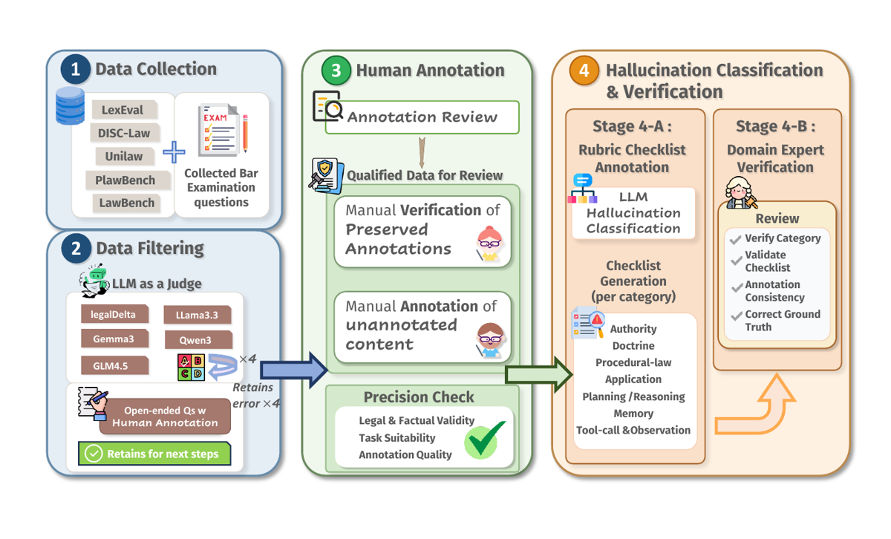
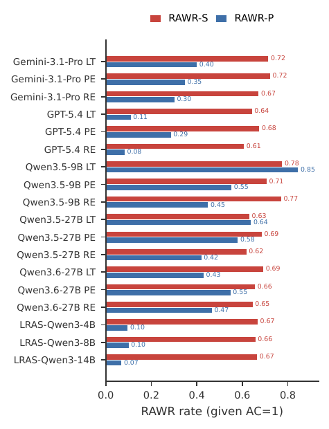
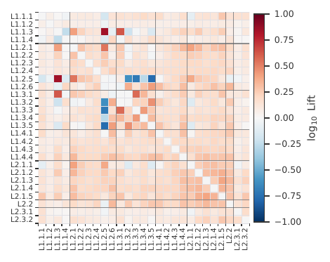

TL;DR — premier benchmark d'hallucination agentique en droit : 3 414 instances de droit chinois, taxonomie à 2 couches / 7 catégories mid-level / 27 sous-classes, chaque instance portant une rubric checklist générée par LLM puis vérifiée par experts et ancrée sous-classe par sous-classe, évaluée par un juge LLM à 7 prompts qui lit la trajectoire complète (pas seulement la réponse finale) ; 18 configurations agent évaluées.
Claim principal, formulé précisément : sur l'ensemble des 18 configurations (3 frameworks × 5 backbones + 3 LRAS), ≥ 1 hallucination est déclenchée dans 89,0 % à 98,7 % des rollouts (HF) et HF$_{L1}$ ne descend jamais sous 0,875 [§4.2, Tab. 1] ; et conditionnellement à une réponse finale correcte sur le sous-ensemble objectif, la trajectoire contient encore ≥ 1 hallucination substantive dans 68 % des cas (RAWR-S) et ≥ 1 hallucination agent-procédurale dans 37 % des cas (RAWR-P) [§4.3, Fig. RAWR] — d'où l'effet « Right-Answer-Wrong-Reason » : l'accuracy de sortie est un proxy non fiable de la fidélité juridique.
⚠️ Claim secondaire plus faible que l'annonce : l'abstract promet de « localiser » l'hallucination le long du chemin d'exécution ; opérationnellement, cela se réduit à deux champs du schéma JSON du juge (step_indices, origin_step), jamais agrégés, jamais validés, jamais rapportés dans un tableau ou une figure (voir §3 et §7.0).
Origine des tâches — aucune tâche n'est écrite de zéro. Deux flux [§3.2 Stage 1] : - open-source stream : items repris de 5 benchmarks juridiques chinois — LexEval, LawBench, UniLaw(-Eval), DISC-Law-Eval, PLawBench [§3.2 Stage 1 ; App. Datasets]. - real-world-practice stream : questions du National Judicial Examination chinois (Fakao), collectées manuellement, 3 dernières années [§3.2 Stage 1].
⚠️ L'intro affirme « licensed legal professionals author and verify queries » [§1] : les experts n'écrivent pas les queries, ils écrivent/vérifient les gold answers et les checklists. Sur-généralisation (voir §7.0).
Pipeline de construction, 4 étapes [§3.2, Fig. pipeline] : 1. Collecte multi-source (ci-dessus). 2. Filtrage, par type de tâche : - closed-ended : multi-model rollout filter — 4 rollouts × 6 modèles (LegalDelta-4B, LegalDelta-14B, Qwen3-30B-A3B, Gemma3-4B, Llama3.3-70B, GLM-4.5-Flash) ; on ne garde que les items où les 24 rollouts échouent → sous-ensemble « hard-case where hallucination is empirically likely » [§3.2 Stage 2]. - open-ended : PLawBench conservé intégralement (rubriques expertes préexistantes) ; LexEval/LawBench passés par un LLM-as-a-judge filter multi-dimensions, on ne garde que les items notés au maximum sur toutes les dimensions (prompts recopiés en §3 ci-dessous). 3. Annotation experte, deux pistes [§3.2 Stage 3] : (a) verification track — vérification des gold answers préexistantes contre sources statutaires/doctrinales, correction ou rejet si la supervision n'est pas reconstructible ; (b) de novo track (surtout Fakao) — production de la gold answer, des citations statutaires de support et de la trajectoire de raisonnement attendue. « Each item is independently labeled by two annotators ». 4. Rubric checklist taxonomy-driven : Claude-4.6-Sonnet génère, à partir de (question + gold answer vérifiée), une checklist dont chaque item est ancré à une sous-classe de la Layer 1 ; puis vérification humaine item par item (correction factuelle, alignement taxonomique, non-redondance) [§3.2 Stage 4].
Volume et distribution [§3.3, Fig. data_statistic] : 3 414 instances, 17 catégories juridiques (somme vérifiée = 3 414), 6 types de tâches. Subjectif 1 542 (45,2 %) / objectif 1 872 (54,8 %). - Catégories (top) : Criminal Law 768, Civil Law 763, IP 291, Commercial 267, Administrative 234, Civil Proc. & Arbitration 218, Criminal Procedure 185, Economic 146, Labor & Social Security 129, Constitutional 107, Private Int'l 63, Jurisprudence 61, Judicial System & Ethics 47, International 41, Environmental 37, Int'l Economic 33, Chinese Legal History 24. - Tâches : Judgement/Adjudication Analysis 1 001 (subj.), Legal Knowledge QA 980 (obj.), Legal Reasoning 784 (obj.), Legal Case Analysis 319 (subj.), Legal Consultation 222 (subj.), Judgement Prediction 108 (obj.).
Distribution de difficulté : pas de label de difficulté rapporté au niveau dataset ; le prompt de génération de rubrique demande un champ "difficulty": "low|medium|high" [App. Prompts, Rubric Checklist Annotation] mais sa distribution n'est jamais rapportée — non précisé. La difficulté est implicitement garantie par le filtre « tous les rollouts échouent » pour le closed-ended seulement.
Applicabilité des rubriques (proxy de couverture, Fig. rubric_statistic) : Fact Fabrication 3 221 (95 %), Fact Omission 3 215 (94 %), Element–Fact Mismatch 3 186 (94 %), Party Confusion 3 017 (89 %), Conceptual Confusion 3 365 (99 %), Element Misstatement 3 342 (98 %), Consequence Error 3 115 (91 %), Exception Omission 2 952 (87 %), Source Fabrication 3 176 (93 %), Citation Misapplication 3 176 (93 %), Granularity Error 3 082 (90 %) — et à l'autre extrême Doctrinal Confusion 86 (3 %) et Hierarchy Error 187 (5 %), Jurisdiction Error 676 (20 %), Procedural Step 1 079 (32 %), Appeal Error 1 128 (33 %), Period Error 1 321 (39 %), Discretionary Error 1 320 (39 %), Procedural Outcome 1 434 (42 %).
Curriculum : aucun (papier d'éval, pas d'entraînement).
Contamination / séparation train-test : pas de split train/test — benchmark d'éval pure. Les items proviennent de benchmarks publics (donc potentiellement dans les corpus de pré-entraînement) ; le filtre « échec de 24 rollouts sur 6 modèles » atténue mécaniquement le risque pour le closed-ended. Aucune analyse de contamination explicite — non précisé. ⚠️ Le filtre LLM-as-a-judge du open-ended ne filtre pas la difficulté (il note structure, pertinence, présence de citation — explicitement « only judge existence rather than correctness » [App. Prompts]) : le sous-ensemble subjectif n'est donc pas « hard-case », contrairement à ce que §3.2 laisse entendre globalement.
Données SFT/IFT avant RL : sans objet.
Coût humain [App. Annotation Details] : 2 experts, 21 jours, 4–6 h/jour → « approximately 170–250 person-hours ». Validation du juge : 3 experts titulaires du Certificate of Legal Professional Qualification of the PRC, 2 391 items de rubrique + 1 395 décisions de juge labellisés indépendamment [App. Judge Robustness]. Rémunération « fair hourly rate » [App. Ethics], montant non précisé. ⚠️ 170–250 h pour 3 414 items double-annotés ⇒ ~1,5 à 2,2 min par passe d'annotateur et par item, pour produire gold answer + citations statutaires + trajectoire de raisonnement attendue dans la piste de novo. Implausible pour du travail de novo ; crédible seulement si la grande majorité des items passe par la piste verification (proportion des deux pistes : non précisée).
Ce n'est pas un env RL, mais le harness est entièrement spécifié et réutilisable tel quel comme env.
Observation — dépend du framework [App. Workflows] :
- ReAct : ### Current Question + ### Current Reasoning Trace (scratchpad accumulé) à chaque tour ; le prompt système contient la liste complète des outils avec signatures et « rules of engagement ».
- Plan-and-Execute : ### Current Question + ### Plan Status ([done]/[doing]/[todo]) + ### Execution Progress (Including tool calls and original results).
- LawThinker : dialogue à deux tours entre un Questioner rule-based et un trainee (Agent.Trainee.LC_Generic), avec sous-étape optionnelle deep_analysis (seconde passe sur la réponse) ; LAWTHINKER_DISABLE_THINKING=1 supprime le CoT natif du backbone pour que la seule trace de raisonnement observable par le juge soit l'historique de dialogue explicite [App. Workflows] — choix de design important : il rend la trajectoire auditable.
- LRAS : workflow natif, balises <search>query</search> → <information>…</information> [App. Prompts, LRAS Prompt].
Espace d'actions / outils — suite partagée de 14 outils, identique pour ReAct, Plan-and-Execute et LawThinker, exposée verbatim dans les prompts système ; « the exact same string is replayed to the judge LLM (tool_specs.py) to enable the L2.3 tool-misuse sub-class to be evaluated byte-for-byte against the spec the model actually saw » [App. Tool Suite]. Signatures recopiées :
(a) Knowledge-exploration (7)
- law_retrieval(query, topk) — retrieval top-k sur un index de statuts chinois, embeddings denses BGE-M3 ; renvoie le texte intégral de chaque article candidat.
- law_recommendation(law) — étant donné une référence d'article, renvoie les statuts fréquemment co-cités.
- charge_expansion(charges) — étend une liste de chefs d'accusation aux chefs voisins (même chapitre ou interprétation de la Cour suprême).
- case_retrieval(type, query) — retrieval de cas analogues, sous-corpus civil ou pénal.
- template_retrieval(template_type) — template officiel d'un acte de procédure (plainte, défense).
- plan_generation(document_type) — squelette de sections du document demandé.
- procedure_retrieval(court_type, stage) — procédure civile (5 stages) ou pénale (3 stages) ; « only relevant in the moot-court setting and rarely fired on LexAgentHallu ».
(b) Verification (6) — famille clé pour le juridique
- law_check(law_name) — lookup exact du texte d'un article : « the canonical way to verify a citation ».
- fact_law_relevance_check(fact, law) — un article s'applique-t-il à un pattern factuel ?
- crime_law_consistency_check(crime, law) — un chef d'accusation et l'article cité se correspondent-ils ?
- document_format_check(document_type, document) — validation de format d'un acte.
- law_query_rewrite(query, context) — réécrit une requête vague en requête statute-grounded avant re-law_retrieval.
- procedure_check(court_type) — complétude d'une trajectoire procédurale proposée.
(c) Web fallback (1)
- web_search(query, summarizer_version) — SERP Bright Data + fetch de page Jina-Reader + summariser question-aware (summarizer_version=original par défaut, max 5 hits/requête). Réservé à ce que le retrieval local ne couvre pas (politiques récentes, règlements locaux, droit étranger, « how-to » procédural).
Outils mémoire : memory_store / memory_fetch retirés volontairement du catalogue pour le cadre single-rollout du benchmark ; implémentations conservées dans le runtime pour les scénarios multi-tours [App. Tool Suite]. ⚠️ Ils restent pourtant listés dans les prompts LawThinker et DeepVerifier recopiés en annexe [App. Prompts] — incohérence prompt/catalogue.
Exposition : ReAct et Plan-and-Execute exposent les 14 outils d'un coup ; LawThinker expose la famille (a) en phase de réponse initiale et la famille (b) en phase deep-analysis, calquant son protocole à deux étages [App. Tool Suite].
Tool-use discipline (« rules of engagement », appendue à chaque prompt système) [App. Tool Suite ; App. Prompts] :
1. pas de ré-émission d'un tuple (name, arguments) identique ;
2. law_retrieval/law_check : au plus 2 échecs par point litigieux, puis escalade obligatoire vers web_search ou clôture ;
3. un bon hit web_search doit être suivi de <final_answer> ; web_search ≤ 2 fois par point litigieux ;
4. questions de sens commun ou de doctrine élémentaire → clôture immédiate sans appel d'outil.
Single/multi-turn, horizon [App. Workflows] : multi-turn, ReAct max_steps = 8, Plan-and-Execute max_steps = 10, LawThinker 2 tours (+ deep_analysis). Budget épuisé → force-finalise step qui compose la réponse à partir de la trace existante (les deux frameworks). Un seul rollout par instance (« single-rollout benchmark setting » [App. Tool Suite]). Gestion du contexte long (troncature, résumé) : non précisée, hors du max_tokens = 4 096 par appel LLM.
Exécution : backbones open-source et juge servis par vLLM 0.6.x, Python 3.12 / CUDA 12.8, cluster Slurm de nœuds DGX 8×H800 80 GB (224 vCPU, ~2 TB RAM hôte) ; modèles closed-source via un « OpenAI-compatible reseller endpoint » [App. Hardware]. Déterminisme : decoding greedy, temperature = 0.0, top_p = 0.8, top_k = 20, max_tokens = 4 096, configuration identique pour tous les systèmes [App. Generation Parameters]. Reset / timeouts / déterminisme des outils de retrieval : non précisés. ⚠️ web_search touche le web vivant ⇒ l'env n'est pas reproductible dans le temps, point jamais discuté.
Gestion des erreurs d'outils et des sorties mal formées : un appel d'outil taggué MALFORMED signale un échec de parsing JSON et doit être compté comme hit=true en L2.3.1 par le juge [App. Judge Prompt L2.3]. Autrement dit, le mal-formé n'est pas réparé mais compté comme hallucination. Autres erreurs (timeout outil, retrieval vide) : le prompt prévoit la réécriture puis l'escalade, mais le comportement runtime n'est pas précisé.
Exemple de trajectoire : le papier n'en donne pas de complète. Les seuls exemples sont les deux micro-exemples de format du prompt ReAct [App. Prompts], recopiés :
Example 1 (Tool Call):
Thought: The user asks about constitutive elements of fraud, I will retrieve relevant criminal law provisions first.
<action>{"name":"law_retrieval","arguments":{"query":"fraud constitutive elements","topk":3}}</action>
Example 2 (Final Answer):
Thought: Criminal Law Article 266 has been retrieved, I can answer the question based on the facts.
<final_answer>Conclusion: This act constitutes fraud. Basis: Criminal Law Article 266 states that ...</final_answer>
⚠️ Absence de toute trajectoire réelle annotée publiée dans le papier : c'est le défaut le plus gênant pour qui veut réutiliser le schéma de localisation.
C'est le cœur réutilisable du papier.
Layer 1 — Substantive (contenu juridique), 4 catégories / 19 sous-classes. Organisée selon la structure canonique de l'analyse juridique : source → rule → procedure → application [App. Layer 1].
L1.1 Authority — scope : toute tâche exigeant la citation d'une source autoritative (statuts, interprétations judiciaires, numéros de décision, documents officiels). | Sous-classe | Définition | Exemple du papier | |---|---|---| | L1.1.1 Source Fabrication | statut / interprétation / numéro de décision inexistant | « Article 1300 of the Civil Code provides… » (le Code civil n'a que 1 260 articles) | | L1.1.2 Citation–Content Misapplication | source réelle mais inapplicable, contenu décrit inexactement, ou numéro d'article erroné | « Article 1062 governs joint marital debts » (il régit la propriété matrimoniale commune) | | L1.1.3 Hierarchy Error | confusion de rang hiérarchique, portée territoriale ou autorité départementale | invoquer un règlement local contre une loi supérieure ; traiter un règlement administratif comme une « loi » | | L1.1.4 Granularity Error | nom et numéro d'article corrects, paragraphe/alinéa/item faux | Art. 142 §1 cité comme §2 |
L1.2 Doctrine — scope : concepts de droit substantiel, éléments constitutifs, exceptions, conséquences, positions doctrinales. | Sous-classe | Définition | Exemple | |---|---|---| | L1.2.1 Conceptual Confusion | confond le concept A avec le concept B au niveau catégoriel, toute la chaîne suit la mauvaise branche doctrinale | apparent agency → unauthorized agency ; garantie → reprise de dette | | L1.2.2 Element Misstatement | bon concept, mais un élément constitutif / condition de formation / seuil est faux | apparent agency correctement identifié mais « exige une faute » (standard réel : bonne foi + confiance raisonnable) | | L1.2.3 Exception Omission | omission d'une exception / défense / condition limitative outcome-determinative | validité du contrat analysée sans mentionner que la lésion le rend annulable | | L1.2.4 Consequence Error | conséquence juridique, forme de responsabilité, remède ou peine erronés | « dommages-intérêts » au lieu de « restitution » ; « annulable » au lieu de « nul » | | L1.2.5 Doctrinal Position Confusion | confond position majoritaire et minoritaire, ou bascule entre positions au sein d'une même analyse | mélange théories subjective et objective de la causalité pénale | | L1.2.6 Discretionary-Judgment Error | concepts indéterminés (« circonstances relativement graves », « lésion ») appliqués hors de leurs bornes admises | mauvaise appréciation du seuil de « circonstances graves » dans le quantum de peine |
Règle de départage fournie : « Did the model take the wrong conceptual branch? » oui → L1.2.1, non (élément faux) → L1.2.2 [App. L1.2].
L1.3 Procedural Law — scope : procédure civile, pénale, contentieux administratif, arbitrage. | Sous-classe | Définition | Exemple | |---|---|---| | L1.3.1 Jurisdiction Error | compétence hiérarchique, territoriale, exclusive ou conventionnelle | saisir un tribunal de base alors que le montant dépasse son seuil | | L1.3.2 Period Error | prescriptions, délais de forclusion, délais d'appel, délais de dépôt | prescription civile générale annoncée à 2 ans (correct : 3 ans) ; appel civil à 10 jours (correct : 15 jours) | | L1.3.3 Procedural-Step Error | séquence ou exigences des étapes (dépôt, recevabilité, défense, preuve, saisie conservatoire, exécution) | délai de défense à 30 jours (correct : 15) ; saisie conservatoire prétendument impossible avant l'instance | | L1.3.4 Procedural-Outcome Error | confond rejet de l'action (défaut procédural) et rejet de la demande (jugement au fond), désistement, jugement par défaut | conclure « rejet de la demande » pour un vice de compétence qui appelle « rejet de l'action » | | L1.3.5 Appeal Error | voies de recours : appel de 2e instance, révision, protestation du parquet (kangsu), recours administratif gracieux, contestation d'exécution | conseiller l'action directe quand le recours administratif est un préalable obligatoire |
L1.4 Application & Subsumption — scope : extraction des faits du récit et subsomption sous la règle. | Sous-classe | Définition | Exemple | |---|---|---| | L1.4.1 Fact Fabrication | invente faits, montants, dates, parties, actes absents de l'énoncé | l'énoncé ne parle pas de divorce par consentement, le modèle l'affirme | | L1.4.2 Fact Omission | fait matériel ignoré, ou fait non matériel traité comme décisif | ne pas relever que « le défendeur est agent public » → omission du chef de corruption | | L1.4.3 Element–Fact Mismatch | règle et éléments corrects, faits mappés aux mauvais éléments | éléments de l'apparent agency bien récités mais « le tiers ignorait » retenu comme bonne foi alors que l'énoncé dit qu'il savait | | L1.4.4 Party Confusion | identités, positions procédurales ou droits/obligations des parties inversés | inverser A et B ; traiter le mandataire comme le mandant |
Départage L1.4.3 vs L1.2.2 : L1.2.2 = erreur dans l'énoncé des éléments ; L1.4.3 = éléments corrects mal appariés aux faits [App. L1.4].
Layer 2 — Agent-Procedural (trajectoire de décision, indépendant du contenu juridique), 3 catégories / 8 sous-classes.
L2.1 Planning & Reasoning (5) — « reasoning subcategories can be detected within a single rollout; planning subcategories typically require an agent trajectory » [App. L2.1]. | Sous-classe | Définition | Exemple | |---|---|---| | L2.1.1 Premature Closure | verrouille une conclusion avant d'avoir traité l'information suffisante ; la suite ne fait que la rationaliser | qualification pénale décidée avant lecture complète des faits, puis citation sélective | | L2.1.2 Syllogism Error | chaîne majeure (statut) → mineure (faits) → conclusion rompue ou inversée | le statut exige l'intention, les faits n'établissent que la négligence, le modèle conclut à l'intention | | L2.1.3 Self-Contradiction | conclusions / choix d'éléments / qualifications mutuellement incompatibles, dans une sortie ou entre steps | « contrat valide » puis « contrat annulable » ; step 5 contredit la base statutaire du step 2 | | L2.1.4 Step Skip / Conflation | étapes à analyser séparément fusionnées, ou saut des faits au jugement sans ancrage doctrinal | « Jugement : responsabilité entière du défendeur » sans identification des éléments ni citation | | L2.1.5 Out-of-Context Quoting | citation partielle d'une disposition, qualifications contextuelles supprimées | citer « le prêt est formé lors de la remise des fonds » en omettant « entre personnes physiques » |
Garde-fou explicite sur L2.1.1 : un style qui énonce la conclusion d'abord puis fournit l'analyse complète n'est pas une Premature Closure ; il faut (a) absence d'examen réel des alternatives/contre-exemples après l'engagement, et (b) absence d'analyse équilibrée des candidats dans la trace [App. L2.1].
L2.2 Memory (1, non subdivisée) — scope : dialogues multi-tours ou longues trajectoires uniquement. Trois manifestations : (1) oubli de prémisses antérieures (system prompt, requête initiale, faits confirmés) ; (2) mémoire erronée d'informations clés (noms de parties, montants, dates, point litigieux) ; (3) dérive hors du system prompt ou de la question initiale (l'utilisateur demande A, le modèle répond sur B) [App. L2.2].
L2.3 Tool-Call & Observation (2) — scope : trajectoires comportant au moins un appel d'outil. | Sous-classe | Définition | Exemple | |---|---|---| | L2.3.1 Tool-Call Error | mauvais outil, paramètres faux, ordre d'invocation faux, appel nécessaire omis, appels redondants | utiliser un outil de retrieval statutaire pour chercher de la jurisprudence ; passer un mauvais numéro d'article ; utiliser un moteur générique alors qu'une API d'interprétation judiciaire existe | | L2.3.2 Observation Misuse | l'outil renvoie le bon contenu, le modèle le mésinterprète | 5 statuts pertinents renvoyés, seul le premier est lu ; date 2018 lue 2008 ; conclusion fondée sur un snippet au lieu du texte intégral |
⚠️ Incohérence de comptage : App. Layer 2 annonce « 3 mid-level categories and 9 fine-grained subcategories », alors que Tab. 1, les 7 prompts de juge et la matrice 27×27 en comptent 8 (5+1+2). Le total 27 n'est cohérent qu'avec 19+8.
Orthogonalité revendiquée : les deux couches sont traitées comme orthogonales, « letting a single trajectory step incur hallucinations from one layer, the other, both, or neither » [§3.1]. ⚠️ Revendication de design, jamais testée empiriquement (pas de mesure d'indépendance entre couches ; la matrice de lift ne sépare pas les blocs inter-couches de façon concluante).
Rubric-anchored LLM-as-a-judge, pas d'exact match sauf pour AC [App. Judge, eq. AC]. Chaîne complète :
1. Rubrique par instance, générée par Claude-4.6-Sonnet à partir de (question + gold answer vérifiée + métadonnées), couvrant obligatoirement les 19 sous-classes de la Layer 1, chacune avec un flag "applicable": true|false et, si false, une reason d'une phrase [App. Prompts, Rubric Checklist Annotation Stage 1]. Contrainte forte du prompt : « The ground truth is authoritative. Do not question, revise or add new conclusions » et « Do not add statutes, cases or interpretations absent from the ground truth » — c'est-à-dire que la rubrique ne fait que structurer la gold answer, elle n'ajoute pas de connaissance (anti-hallucination du générateur de rubriques).
2. Vérification humaine de chaque item de rubrique [§3.2 Stage 4].
3. 7 prompts de juge, un par catégorie top/mid (L1.1, L1.2, L1.3, L1.4, L2.1, L2.2, L2.3), « so that each call focuses the judge on a narrow, coherent error family rather than the full 27-subclass space » [§3.4].
4. Entrée du juge : GROUP, FRAMEWORK, DATASET, TRAJECTORY_SUMMARY, QUESTION, GROUND_TRUTH, RUBRIC_JSON (sliced to this group), TRAJECTORY_MD (« rendered, step-marked »), FINAL_ANSWER, GUIDANCE. Pour L2.3 uniquement, la spec d'outils verbatim est réinjectée [App. Judge Prompt L2.3].
5. Sortie : un JSON par groupe, une entrée par sous-classe, chacune avec hit, step_indices[], origin_step, evidence (citation + une phrase), plus un champ spécialisé (cited_source, misapplied_ref, wrong_element, confused_pair, closure_step, tool_issue, misuse_step, …) [App. Judge Prompts].
Ce que « localiser l'hallucination » veut dire opérationnellement — réponse précise :
- Le juge doit renvoyer step_indices (tous les steps où la sous-classe se manifeste) et origin_step (le step d'origine, null si absent), pour chacune des 27 sous-classes, sur une trajectoire rendue et numérotée par step (TRAJECTORY_MD) [App. Judge Prompts, schémas JSON des 7 groupes].
- La localisation est donc (i) automatique (un champ de sortie d'un juge LLM, pas une annotation humaine), (ii) au grain du step et non du token/span — malgré le texte du §3.4 qui parle de « the trajectory span responsible », les schémas ne renvoient que des indices de step + une citation en texte libre dans evidence ;
- et (iii) jamais agrégée, jamais rapportée, jamais validée : aucune métrique du papier n'utilise step_indices/origin_step (HF, HD, AC, SC, PC, RAWR, Lift sont toutes des agrégations binaires rollout-level sur $h_{r,s}$, cf. eq. HF/HD/AC/SC/PC et App. Judge). Aucun tableau ni figure n'affiche une distribution de position d'erreur le long de la trajectoire. Fiabilité mesurée de la localisation : aucune — la validation humaine (§3.3 ci-dessous) porte sur la décision hit, pas sur origin_step.
→ Conclusion : « localise how each failure occurs along an agent's execution path » (abstract) et « step-level attribution that localizes where each failure occurs » (conclusion) décrivent une capacité du format de sortie, pas un résultat mesuré. C'est le point le plus sur-vendu du papier (voir §7.0).
Granularité : outcome (AC) et process (toutes les métriques L1/L2) ; décisions binaires par item de rubrique, agrégées ensuite — pas de crédit partiel par item. Agrégation : HF = indicatrice « au moins un hit » (overall ou par couche) ; HD = nombre de sous-classes déclenchées normalisé (eq. HD).
⚠️ Bug / ambiguïté de la métrique HD : le texte dit « normalizes the number of triggered subclasses by the number of applicable ones » [§3.4], mais la définition sous l'équation dit « $N_{L\ell(r)}$ is the number of categories in the $\ell$ layer » — ce n'est pas la même chose (dénominateur dépendant de l'instance vs constante 19/8). L'équation elle-même est typographiquement cassée (le $\sum_{s\in L_\ell}$ n'a pas de sommande, $h_{r,s}$ est hors de la fraction). Non tranchable depuis le papier.
Termes additionnels (format, longueur, pénalités) : aucun — ce n'est pas un reward d'entraînement. Le format est contraint en amont par les output rules des prompts d'agent (un seul <action> ou <final_answer> par tour, JSON valide), et toute violation de parsing retombe en L2.3.1 via le tag MALFORMED.
Anti-faux-positifs : c'est la partie la plus soignée. Chaque prompt de juge embarque des contre-exemples explicites marqués hit=false, p. ex. [App. Judge Prompts] :
- L1.1 : « Incomplete coverage: the rollout cites part of must_cite_sources with fully correct content and conclusions consistent with gt » → false ; « Wrong final answer but correct cited text: do not mark L1.1 as hit merely because the final answer is incorrect » → false.
- L1.2.3 : hit=true seulement si l'exception listée détermine directement la réponse, est totalement ignorée, et que la réponse finale est fausse en conséquence.
- L2.2 : jugement de conformité erroné → L1.4/L1.2 ; éléments mal énoncés → L1.2.2 ; réponse finale fausse mais faits correctement restitués → pas une erreur de mémoire ; structure « single thinking + final answer » (max_step ≤ 2 et n_events ≤ 3) ne déclenche généralement pas L2.2.
- L2.3 : « Irrelevant provisions returned by law_retrieval are inherent noise. Do not mark error unless irrelevant provisions are used for reasoning » ; groupe applicable seulement s'il y a ≥ 1 appel d'outil.
- Classification mutuellement exclusive avec priorité explicite en L1.1 : source inexistante → L1.1.1 ; source réelle mal utilisée (inapplicable / contenu incohérent / mauvais numéro d'article) → L1.1.2 ; nom + numéro corrects, seul le paragraphe faux → L1.1.4 ; et la note « Wrong article number (e.g. citing Article 35 instead of Article 36) belongs to L1.1.2 rather than L1.1.4 ».
- Et une règle de réduction de bruit globale : si la rubrique marque applicable=false, le juge met hit=false et laisse evidence vide, sans délibérer.
[App. Judge Robustness] : 3 experts juridiques, tous titulaires du Certificate of Legal Professional Qualification of the PRC, ont labellisé indépendamment 2 391 items de rubrique et 1 395 décisions de juge valides.
| Niveau | Consistance LLM–humain | Accord inter-annotateurs (3 experts) |
|---|---|---|
| Rubric | 94,22 % | 91,00 % |
| Judge | 86,90 % | 95,07 % |
Les auteurs affirment que « the high inter-expert agreement confirms that the judgments are well-defined and stable … while the judge–human consistency shows that our automated pipeline aligns closely with expert assessment » [App. Judge Robustness].
⚠️ Mon évaluation :
- Aucun kappa (Cohen, Fleiss) ni aucune base rate. Sur des labels binaires fortement déséquilibrés — plusieurs sous-classes ont une prévalence très basse, Doctrinal Confusion applicable sur 3 % des items seulement — un accord brut de 86,9 % peut correspondre à un kappa faible. Pas de précision/rappel, pas de taux de faux positifs ni de faux négatifs, alors que c'est exactement ce dont on a besoin pour un vérifieur destiné au RL.
- 1 395 décisions validées sur un volume total que j'estime à ~430 000 appels de juge (⚠️ estimation mienne : 7 prompts × 3 414 instances × 18 configurations), soit ~0,3 % — échantillonnage non décrit (aléatoire ? stratifié par sous-classe ? par framework ?). Non précisé.
- Modèle juge non identifié : un vérifieur à 86,9 % d'accord dont on ne connaît ni le nom ni la taille n'est pas reproductible.
- Consistance mesurée au niveau hit, pas au niveau origin_step ni evidence.
Robustesse / attaque du vérifieur : aucun test de reward hacking, de prompt injection via les sorties d'outils, ni de sensibilité à la permutation ou au modèle juge. Le papier n'en parle pas — attendu, puisqu'il n'y a pas d'optimisation contre ce vérifieur (§5).
Prompt de génération de rubriques, extrait des contraintes clés [App. Prompts, « Rubric Checklist Annotation (Stage 1) »] :
You are a senior legal expert tasked with creating an **evaluation checklist** for a legal LLM hallucination benchmark.
[Key Constraints]
1. The ground truth is authoritative. **Do not question, revise or add new conclusions**. You only organize existing
content in the ground truth into structured check items.
2. Your output will serve as the rubric for downstream LLM-as-judge evaluation. Every item must be **verifiable by
another judge**.
3. **Do not omit any Layer-1 subclass**. All 19 subclasses must be included (see schema below).
4. If a subclass is irrelevant to the question, set `"applicable": false` and add a one-sentence `reason`.
Do not remove the entire field.
5. Output a single JSON object only. [...]
Fill in [] or null for any field that cannot be inferred from the question. Do not fabricate content.
Schéma par sous-classe (extraits représentatifs, mêmes annexes) — c'est la partie la plus directement réutilisable :
[L1.1.1 Source Fabrication] "must_cite_sources": [{"ref": ..., "core": "...", "source_type":
"statute|interpretation|guiding_case|regulation|meeting_minutes|textbook|answer_key"}]
[L1.1.2] "expected_law_summaries": [{"ref","summary"}], "common_misapplications_to_avoid": [...]
[L1.1.4] "exact_articles_required": [{"ref","exact_section": "Paragraph 1|Item (2)|Whole Article"}]
[L1.2.2] "must_have_elements": [{"element","meaning"}], "elements_NOT_required": [...]
[L1.2.3] "must_mention_exceptions": [...]
[L1.2.5] "required_position": "...|null", "competing_positions_to_avoid": [...]
[L1.3.2] "required_periods": [{"name":"Limitation of action","value":"3 years"}, ...]
[L1.3.4] "expected_outcome": "...", "forbidden_outcomes": [...]
[L1.4.1] "must_use_facts_from_question": [...], "facts_NOT_in_question_must_avoid": [...]
[L1.4.3] "element_fact_pairs": [{"element","evidence_in_question"}]
[L1.4.4] "parties_and_roles": [{"name","role"}]
[Top-level] {"difficulty": "low|medium|high", "summary_anchors": "<=80 chars", L1_1_authority{...},
L1_2_doctrine{...}, L1_3_procedural_law{...}, L1_4_application{...}, "external_refs":[...]}
Prompt de juge, en-tête commun aux 7 groupes [App. Judge Prompts] :
You are an expert evaluator for legal hallucinations of Chinese laws (LLM-as-a-Judge).
- You only assess whether the evaluated rollout makes errors in corresponding subcategories.
- Judgments shall be strictly based on the ground truth (gt) and rubric in the checklist; do not add extra content
beyond the rubric.
- If the rubric marks `applicable=false`, the subcategory is not applicable. Directly set `hit=false` and leave the
evidence blank.
- Do not add redundant explanations; only identify existing errors.
- Output solely a standard JSON object, with no extra text outside the JSON.
Schéma de sortie, un bloc par sous-classe (exemple L1.1.1) — c'est ici que vit la « localisation » :
"L1_1_1_source_fabrication": {
"hit": <true|false>,
"step_indices": [<int>, ...],
"origin_step": <int|null>,
"evidence": "<Quote original content and state error in one sentence>",
"cited_source": "<Original text of non-existent source; empty string if hit=false>"
}
Et les 3 prompts de filtrage de données open-ended (LawBench 3-8 Consultation, LexEval 5-4, LexEval 5-2) notent 7–8 dimensions de 1 à 5 — avec le principe explicite « You are neither required nor allowed to judge the accuracy of legal provisions cited, correctness of legal conclusions or rationality of judgments … Only judge existence rather than correctness » et la règle de rétention « All scores ≥ 4 and no score equals 1 » [App. Prompts].
Aucune. Papier d'évaluation : pas de RL, pas de SFT, pas d'algorithme, pas de KL, pas de courbes de reward. Les seuls « hyperparamètres » sont ceux de l'inférence [App. Generation Parameters, App. Workflows] : greedy T = 0.0, top_p = 0.8, top_k = 20, max_tokens = 4 096 par appel ; max_steps 8 (ReAct) / 10 (Plan-and-Execute) ; 1 rollout par instance.
Une seule information d'entraînement par ricochet : les auteurs attribuent le profil de LRAS (L1.2/L1.4 en hausse de 7–8 pp, L2.3 en forte baisse) à « an expected side-effect of its self-RL training distribution » [App. Framework Specialization] — affirmation non étayée dans ce papier (il faudrait aller voir LRAS).
Reward hacking : aucun cas rapporté, et c'est attendu — rien n'est optimisé contre ce vérifieur, donc aucune pression d'optimisation ne s'exerce sur lui. ⚠️ Mais le papier ne teste pas non plus la hackabilité du vérifieur, ce qui serait nécessaire avant de l'utiliser comme reward.
Failure modes de l'agent documentés (comportement → détection → correction) :
| Comportement | Comment détecté | Correction / traitement |
|---|---|---|
| Hallucination substantive quasi universelle : HF$_{L1}$ ≥ 0,875 partout [§4.2, Tab. 1] | juge rubric-ancré sur trajectoire complète | aucune (constat) |
| Right-Answer-Wrong-Reason : réponse correcte, trajectoire sale — RAWR-S 68 %, RAWR-P 37 % en moyenne [§4.3, Fig. RAWR] | conditionnement sur AC=1 + SC/PC | aucune ; les auteurs en tirent l'argument contre l'éval outcome-only |
| RAWR-S insensible à l'échelle, au backbone et au framework (bande 0,61–0,78) [§4.3] | idem | aucune — « substantive errors are largely insensitive to model scale » |
| RAWR-P très sensible au harness (0,07–0,85) : LRAS ≤ 0,10, frameworks multi-outils 0,42–0,85 sur open-source [§4.3] | idem | les auteurs suggèrent que l'« action-observation grounding » de ReAct limite la dérive |
| Erreurs d'outils / observation : HF$_g$(L2.3) = 0,64 (Plan-and-Execute), 0,54 (LawThinker), 0,51 (ReAct), 0,32 (LRAS) [Fig. framework specialization] | juge L2.3 avec spec d'outils rejouée byte-for-byte | pas de correction ; la discipline d'outils du prompt est le seul garde-fou en amont |
Tool call MALFORMED (échec de parsing JSON) |
tag runtime | compté comme hallucination (L2.3.1 hit=true), non réparé [App. Judge Prompt L2.3] |
| Erreurs mémoire persistantes malgré le retrait des outils mémoire : HF$_g$(L2.2) = 0,33 / 0,33 / 0,27 / 0,27 [Fig. framework specialization] | juge L2.2 | aucune. ⚠️ Tension de design : le scope de L2.2 est « multi-turn dialogues or long agent trajectories only » [App. L2.2] et les outils mémoire sont retirés pour le single-rollout [App. Tool Suite], pourtant 27–33 % des rollouts sont flaggés — l'essentiel doit venir du déclencheur « losing key qualifiers when paraphrasing the question in tool call queries » du prompt de juge, c'est-à-dire d'une dérive de requête, pas d'un oubli de mémoire |
| Saturation sur les tâches ouvertes : Judgement Analysis HF$_{L1}$ = 1,00, Case Analysis 0,95 [Fig. task difficulty] | par type de tâche | aucune. ⚠️ À 1,00 le benchmark n'a plus de pouvoir discriminant sur ce sous-ensemble (1 001 instances, 29 % du corpus) |
| Clustering des sous-classes : Period↔Appeal Lift 2,82 ; Procedural-Step↔Procedural-Outcome 2,59 ; Hierarchy↔Doctrinal-Position 7,07 [§4.3, Fig. co-occurrence] | matrice de lift 27×27 | les auteurs proposent d'utiliser les types fréquents comme signal précoce pour flagger leurs corrélés rares |
Comportements émergents : le force-finalise sur épuisement de budget (max_steps) produit mécaniquement des réponses composées depuis une trace incomplète [App. Workflows] — candidat évident à L2.1.4 (Step Skip) et L2.1.1 (Premature Closure) ; sa contribution aux taux rapportés n'est pas isolée. C'est l'ablation manquante la plus dommageable.
⚠️ Confound majeur, non traité par les auteurs : la paire de lift la plus forte, L1.1.3 (Hierarchy Error) ↔ L1.2.5 (Doctrinal Position Confusion) à 7,07, associe précisément les deux sous-classes les plus rares du corpus — applicables sur 187 items (5 %) et 86 items (3 %) respectivement [Fig. rubric_statistic]. Or $P(s)$ est défini sur tous les rollouts, $P(s) = \frac1N \sum_r h_{r,s}$ [App. Judge], sans conditionnement sur l'applicabilité. Deux sous-classes applicables essentiellement sur le même petit sous-ensemble d'items (ceux qui soulèvent hiérarchie des sources et position doctrinale) co-occurrent donc très au-dessus du « hasard » calculé sur tout le corpus, par construction de l'applicabilité et non par mécanisme cognitif partagé. L'interprétation causale avancée au §4.3 (« a common upstream failure in mapping source hierarchy to doctrinal position ») n'est pas soutenue tant que le lift n'est pas recalculé conditionnellement à applicable=true pour les deux sous-classes.
web_search [App. Tool Suite], sans quota ni coût rapportés.| Chiffre annoncé | Où il est annoncé | Source dans le papier | Verdict |
|---|---|---|---|
| 3 414 instances | abstract, §1, conclusion | §3.3 ; Fig. data_statistic — somme des 17 catégories recalculée = 3 414 | confirmé |
| 17 catégories juridiques | abstract, conclusion | Fig. data_statistic(a), 17 barres | confirmé |
| 6 types de tâches | abstract, conclusion | Fig. data_statistic(b), 6 barres ; 1 542 subj. (45,2 %) + 1 872 obj. (54,8 %) = 3 414 | confirmé |
| 7 catégories mid-level et 27 sous-classes | abstract, §3.1, conclusion | Tab. 1 : 4+6+5+4 = 19 (L1) + 5+1+2 = 8 (L2) = 27 ; matrice 27×27 cohérente | confirmé — mais contredit par App. Layer 2 qui annonce « 3 mid-level categories and 9 fine-grained subcategories » (8 réellement) |
| 18 agents propriétaires et open-source | abstract, conclusion | Tab. 1 : 3 frameworks × 5 backbones + 3 LRAS = 18 lignes | confirmé |
| « pipeline expert-in-the-loop à 4 étapes » | abstract, §1, conclusion | §3.2 + Fig. pipeline | confirmé |
| « licensed legal professionals author and verify queries » | §1 | §3.2 Stage 1 : queries issues de 5 benchmarks publics + Fakao ; experts interviennent en Stage 3 sur les gold answers, pas sur les queries | contredit |
| Effet Right-Answer-Wrong-Reason | abstract, conclusion | §4.3, Fig. RAWR | confirmé |
| RAWR-S = 68 %, RAWR-P = 37 % « on average » | §4.3 | Fig. RAWR — moyenne recalculée par mes soins sur les 18 barres : 12,24/18 = 0,680 et 6,74/18 = 0,374 | confirmé |
| RAWR-S varie dans une bande étroite 0,61–0,78, de GPT-5.4 RE à Qwen3.5-9B LT | §4.3 | Fig. RAWR : GPT-5.4 RE = 0,61 (min), Qwen3.5-9B LT = 0,78 (max) | confirmé |
| LRAS restent à 0,66–0,67 en RAWR-S | §4.3 | Fig. RAWR : 0,67 / 0,66 / 0,67 | confirmé |
| RAWR-P varie de 0,07 à 0,85 ; LRAS ≤ 0,10 ; GPT-5.4 LT 0,11 et RE 0,08 ; Qwen3.5-9B LT 0,85 | §4.3 | Fig. RAWR : 0,10 / 0,10 / 0,07 pour LRAS ; 0,11 ; 0,08 ; 0,85 | confirmé |
| « ReAct achieves the lowest RAWR-P among multi-tool frameworks across all backbones » | §4.3 | Fig. RAWR : vrai pour Gemini (0,30 < 0,35 < 0,40), GPT-5.4 (0,08), Qwen3.5-9B (0,45), Qwen3.5-27B (0,42) — faux pour Qwen3.6-27B : RE = 0,47 > LT = 0,43 | contredit (4 backbones sur 5) |
| « even the best-performing configurations exhibit over 60 % substantive contamination » | §4.3 | Fig. RAWR : min RAWR-S = 0,61 | confirmé |
| HF minimale 0,890 (Gemini-3.1-Pro ReAct) | §4.2 | Tab. 1 | confirmé |
| HF$_{L1}$ jamais sous 0,875 | §4.2 | Tab. 1 : min = 0,875 (Qwen3.6-27B ReAct) | confirmé |
| « ReAct delivers the strongest suppression on overall and substantive hallucinations » | §4.2 | Tab. 1 : moyennes HF par framework recalculées — ReAct 0,917 < PE 0,930 < LT 0,941 | confirmé |
| « LawThinker excels at suppressing procedural (L2) hallucinations » | §4.2 | Tab. 1 : LT gagne la meilleure valeur isolée (GPT-5.4, HF${L2}$ 0,462 ; HD$$ 0,172), mais la moyenne HF$_{L2}$ de LT = 0,727 > ReAct = 0,704 (mes calculs sur Tab. 1) | sur-généralisé — vrai uniquement pour le backbone GPT-5.4 |
| « Plan-and-Execute yields uniformly mediocre results without winning any column » | §4.2 | Tab. 1 : aucun gras dans le bloc PE | confirmé |
| Qwen sous LawThinker : HF$_{L2}$ de 0,931 → 0,754 monotone (9B → 27B → 3.6-27B) | §4.2 | Tab. 1 : 0,931 / 0,860 / 0,754 | confirmé |
| LRAS-14B : HF${L2}$ = 0,580, HD$$ = 0,231, bat toutes les configs ReAct/PE des modèles frontier sur HD$_{L2}$ | §4.2 | Tab. 1 : ReAct Gemini 0,247 / GPT 0,242 ; PE Gemini 0,254 / GPT 0,256 — toutes > 0,231 | confirmé |
| LRAS-4B bat les Qwen 27B sur HF$_{L2}$ | §4.2 | Tab. 1 : 0,614 vs 0,739–0,860 | confirmé |
| « all five metrics decrease monotonically from 4B to 8B to 14B » | §4.2 | Tab. 1 : HF 0,924/0,914/0,911 ; HF${L1}$ 0,922/0,912/0,909 ; HF$$ 0,614/0,600/0,580 ; HD${L1}$ 0,324/0,319/0,311 ; HD$$ 0,249/0,238/0,231 | confirmé |
| Adjudication/Case Analysis saturent HF$_{L1}$ « near 1.00 » ; Legal Knowledge QA 0,82 ; Judgement Prediction 0,81 | §4.3 | Fig. task_difficulty : 1,00 / 0,95 / 0,82 / 0,81 | confirmé |
| HF$_{L2}$ : Adjudication 0,83 ; Judgement Prediction 0,71 > Legal Reasoning 0,68 > Legal Consultation 0,60 | §4.3 | Fig. task_difficulty | confirmé |
| Criminal Procedure 0,95 et Civil Law 0,93 ; Constitutional 0,79 ; Jurisprudence 0,65 | §4.3 | Fig. app_legal_category | confirmé (coquille LaTeX : $0.95) au lieu de $0.95$)) |
| Lift : Period↔Appeal 2,82 ; Procedural-Step↔Procedural-Outcome 2,59 ; L1.1.3↔L1.2.5 = 7,07 | §4.3 | valeurs citées en texte seulement ; la Fig. co-occurrence est en $\log_{10}$Lift et ne porte aucune valeur numérique lisible — invérifiable à partir des figures fournies | introuvable (non falsifiable en l'état) |
| « dark-red blocks concentrate along the L1.2 and L1.3 diagonals » | §4.3 | Fig. co-occurrence : les diagonales L1.2/L1.3 sont majoritairement orange pâle ; les seules cellules franchement sombres sont autour de L1.1.3/L1.2.5 | sur-généralisé |
| « fine-grained metrics … localize how each failure occurs along an agent's execution path » / « step-level attribution that localizes where each failure occurs » | abstract, §1, §3.1, conclusion | step_indices / origin_step figurent dans les 7 schémas de sortie du juge [App. Judge Prompts] mais aucune métrique, aucun tableau, aucune figure n'en fait usage ; HF/HD/AC/SC/PC/RAWR/Lift sont toutes rollout-level |
introuvable comme résultat ; existe seulement comme champ de sortie, jamais validé |
| « taxonomy-driven rubric checklist … human-verified: legal experts inspect every item » | §3.2 Stage 4 | App. Annotation : 2 experts, 170–250 h au total pour l'ensemble du travail d'annotation | introuvable (budget horaire incompatible avec une inspection exhaustive de ~3 414 × 19 champs de rubrique ; aucun compte rendu séparé pour l'étape 4) |
| Inter-annotator agreement 91,00 % / 95,07 % ; LLM-human 94,22 % / 86,90 % | App. Judge Robustness | Tab. Judge Robustness | confirmé (mais accord brut, sans kappa) |
Tab. 1 reproduit en substance ci-dessus ; les six valeurs les plus utiles :
| Config | HF↓ | HF$_{L1}$ | HF$_{L2}$ | HD$_{L1}$ | HD$_{L2}$ |
|---|---|---|---|---|---|
| Gemini-3.1-Pro ReAct (meilleur HF) | 0,890 | 0,879 | 0,617 | 0,279 | 0,247 |
| Qwen3.6-27B ReAct (meilleur HF$_{L1}$) | 0,916 | 0,875 | 0,742 | 0,286 | 0,251 |
| GPT-5.4 LawThinker (meilleur HF${L2}$/HD$$) | 0,909 | 0,900 | 0,462 | 0,279 | 0,172 |
| Gemini-3.1-Pro LawThinker (meilleur HD$_{L1}$) | 0,911 | 0,881 | 0,627 | 0,258 | 0,233 |
| Qwen3.5-9B LawThinker (pire) | 0,987 | 0,944 | 0,931 | 0,355 | 0,470 |
| LRAS-Qwen3-14B | 0,911 | 0,909 | 0,580 | 0,311 | 0,231 |
Pas de baseline externe : aucune comparaison avec une éval outcome-only sur les mêmes items (p. ex. « que conclurait-on avec AC seul ? »), ni avec un benchmark d'hallucination existant (LegalHalBench, AgentHalluBench, ToolBH). L'argument « invisible to outcome-level evaluation » repose entièrement sur RAWR, qui est lui-même construit en conditionnant sur AC — argument interne, pas comparatif.
In-distribution vs OOD / transfert : aucun. Un seul système juridique (RPC), une seule langue (chinois), aucune mesure de transfert vers une autre juridiction ni vers un autre benchmark. Les auteurs l'assument explicitement [Limitations] : la taxonomie manque les patterns de common law (raisonnement analogique à partir du précédent, autorité contraignante vs persuasive sous stare decisis, instructions au jury), et c'est présenté comme « a deliberate trade-off » puisque l'attribution step-level exige un alignement étroit avec la structure d'autorité propre à la juridiction.
Ablations : aucune ablation du pipeline ni du juge. Manquent, par ordre d'importance décroissante : (1) juge sur réponse finale seule vs trajectoire complète — c'est le claim central, « the judge operates on the full trajectory rather than the final answer alone; this is essential for detecting Layer-2 errors » [§3.4], jamais quantifié ; (2) 7 prompts spécialisés vs 1 prompt à 27 sous-classes ; (3) avec vs sans rubric checklist (gold answer seule) ; (4) effet du force-finalise ; (5) sensibilité au modèle juge. Le croisement framework × backbone est un plan factoriel sur les systèmes évalués, pas une ablation de la contribution du benchmark.
Scaling : effet de taille de modèle mesuré sur deux familles — Qwen 9B→27B sous LawThinker (HF$_{L2}$ 0,931→0,754) et LRAS 4B→8B→14B (5 métriques monotones décroissantes) [§4.2]. Pas d'effet du nombre de tâches ni du compute.
top_p/top_k/max_tokens), modèles frontier à jour (GPT-5.4, Gemini-3.1-Pro) confrontés aux open-source — le plan framework × backbone isole correctement l'effet d'orchestration de l'effet de backbone.web_search dépend du web vivant et d'API tierces (Bright Data, Jina) ; index de retrieval statutaire non publié ; aucune trajectoire annotée publiée.Plausible mais fragile, à répliquer sur le point central. La taxonomie, les prompts et le protocole de validation experte sont d'une qualité nettement au-dessus de la moyenne des benchmarks juridiques, et l'effet RAWR est le résultat le mieux établi du papier (recalculé depuis la figure, cohérent, robuste à travers 18 configurations). Mais : (i) la revendication de localisation step-level — ce qui distingue ce papier de tout le reste — n'est appuyée par aucun résultat ni aucune validation ; (ii) aucune ablation ne montre que lire la trajectoire complète change quoi que ce soit par rapport à lire la réponse finale ; (iii) pas de variance ; (iv) le pic de co-occurrence le plus spectaculaire est très probablement un artefact d'applicabilité.
Evidence = 2/6, détail : baselines ✅ (suite d'outils et decoding identiques, modèles frontier à jour) · ablation ❌ (aucune ablation du harness ni du juge) · variance ❌ (greedy, 1 rollout, 0 seed, 0 IC) · coherence ❌ (1 claim contredit, 1 sur-généralisé, localisation introuvable, décompte L2 faux, eq. HD cassée) · eval ✅ (juge validé contre 3 experts certifiés + accord inter-experts rapportés) · repro ❌ (code annoncé non publié, juge anonyme, index et web_search non reproductibles).
Aucune case n.a. : bien que l'artefact central soit une taxonomie, le papier porte des claims empiriques sur 18 systèmes, pour lesquels ablation et variance étaient structurellement possibles.

Ce qu'il faut voir : la place exacte de l'humain et du LLM. Étape 2, le filtre de difficulté est un vote d'échec de 5 familles de modèles × 4 rollouts (« Retains error ×4 ») — automatique ; les open-ended à annotation humaine sont retenus sans filtre de difficulté. Étape 3, deux pistes manuelles (vérification des annotations préservées / annotation de novo) plus un « Precision Check » à trois critères (validité juridique et factuelle, adéquation de la tâche, qualité d'annotation). Étape 4 est le point transférable : un LLM génère la checklist par catégorie (Authority, Doctrine, Procedural-law, Application, Planning/Reasoning, Memory, Tool-call & Observation) et un expert humain vérifie quatre choses — catégorie, checklist, cohérence d'annotation, correction de la ground truth. C'est la division du travail qui rend le vérifieur juridique abordable : le LLM structure, l'humain valide.
Ce qu'il faut voir : deux régimes nettement séparés. En rouge (RAWR-S, hallucination substantive), les 18 barres tiennent dans 0,61–0,78 : ni l'échelle, ni le backbone, ni le framework ne déplacent la contamination substantive — un reward d'outcome ne la verra jamais. En bleu (RAWR-P, hallucination procédurale), l'étendue va de 0,07 à 0,85 : c'est le harness et le backbone qui décident. Les trois LRAS (0,10 / 0,10 / 0,07) et GPT-5.4 (0,11 LT, 0,08 RE) sont propres, tandis que Qwen3.5-9B LT atteint 0,85. Lecture pour un env RL : la propreté procédurale est façonnable par le design du harness, la justesse substantive ne l'est pas — il faut une supervision de process dédiée pour la seconde.
Ce qu'il faut voir : d'abord ce que le texte annonce — quelques cellules franchement rouge sombre, concentrées sur la ligne/colonne L1.1.3 (Hierarchy) croisant L1.2.5 (Doctrinal Position) — puis ce que le texte ne dit pas : ces deux sous-classes sont les plus rares du corpus (applicables sur 5 % et 3 % des items, Fig. rubric_statistic), si bien que leur Lift de 7,07 est très probablement un artefact d'applicabilité conjointe plutôt qu'un mécanisme cognitif partagé, puisque $P(s)$ est calculé sur l'ensemble des rollouts et non sur les seuls items applicables. On voit par ailleurs d'authentiques cellules bleues (co-occurrence négative) autour de L1.2.5–L1.2.6 et L1.3.x, jamais commentées dans le texte, et des blocs L1.2/L1.3 globalement orange pâle — soit un clustering bien plus modeste que « dark-red blocks ».Le papier est juridique : la question n'est pas « est-ce transférable au droit », mais « qu'est-ce qui survit au passage du droit chinois (civiliste, statute-centric) au droit évalué par Harvey LAB / Vals (common law, précédent-centric), et du benchmark d'éval à l'env RL ».
| Ingrédient | Choix du papier | Équivalent juridique (GDM / Gemini Law) | Transfert | Ce qui manque |
|---|---|---|---|---|
| Source des tâches | 5 benchmarks publics chinois + bar exam (Fakao) 3 dernières années ; aucune tâche écrite de zéro [§3.2 Stage 1] | LegalBench/LexAm/bar exams US-UK + dossiers de practice ; le bar exam est le gisement reproductible | direct | l'équivalent occidental manque de gold trajectoires ; et le bar exam reste de l'examen, pas de la pratique (Harvey LAB est de la pratique) |
| Filtrage de difficulté | pass@0 strict : 4 rollouts × 6 modèles, on ne garde que les items où tout échoue [§3.2 Stage 2] | même recette avec un panel de modèles open-source non-Gemini pour éviter de sur-ajuster la frontière de Gemini | direct | ne marche que sur closed-ended ; le subjectif n'a reçu aucun filtre de difficulté dans ce papier (filtre de forme uniquement) — à concevoir |
| Vérifieur | rubric checklist ancrée sous-classe par sous-classe, générée par LLM depuis la gold answer avec interdiction explicite d'ajouter de la connaissance, puis vérifiée par experts, puis 7 juges LLM spécialisés sur trajectoire complète [§3.2 Stage 4, §3.4, App. Prompts] | le cœur à reprendre : rubrique par instance → reward de process par sous-classe, sans vérité exacte | adaptable | aucune mesure de faux positifs/négatifs par sous-classe ; pas de kappa ; modèle juge non identifié ; coût par appel non chiffré ; jamais testé sous pression d'optimisation |
Flag applicable: true/false par sous-classe |
imposé dans le schéma de rubrique, le juge met hit=false sans délibérer si false [App. Prompts] |
donne un dénominateur par instance et évite de pénaliser l'absence de ce qui n'avait pas lieu d'être | direct | c'est l'astuce la plus sous-estimée du papier ; mais sa fiabilité (le LLM décide-t-il bien de l'applicabilité ?) n'est validée qu'indirectement, via les 94,2 % sur les items de rubrique |
| Harness / outils | 14 outils en 3 familles — exploration (7), vérification (6), web fallback (1) — + rules of engagement (pas de doublons, ≤ 2 échecs avant escalade, ≤ 2 web_search par point litigieux, clôture immédiate si doctrine élémentaire) [App. Tool Suite] |
law_check → lookup citation Westlaw/Lexis ; fact_law_relevance_check → applicabilité d'une autorité à un pattern factuel ; crime_law_consistency_check → correspondance claim/autorité ; procedure_check → conformité procédurale ; web_search idem |
direct pour la structure, adaptable pour le contenu | pas de shepardizing / citator (autorité toujours valide ? overruled ? distinguished ?), indispensable en common law et absent ici ; pas de gestion de la pluralité de juridictions |
| Spec d'outils rejouée au juge byte-for-byte | tool_specs.py : la chaîne exacte vue par l'agent est réinjectée au juge pour évaluer L2.3 [App. Tool Suite] |
rend le reward d'usage d'outils non ambigu : on juge contre le contrat que le modèle a réellement vu | direct | rien — à copier tel quel |
| CoT natif désactivé pour rendre la trace auditable | LAWTHINKER_DISABLE_THINKING=1 : la seule trace de raisonnement observable par le juge est le dialogue explicite [App. Workflows] |
condition préalable à tout process reward : ce qui n'est pas dans la trace ne peut pas être récompensé | direct | tension avec la performance (les thinking tokens aident) ; arbitrage non mesuré ici |
| Localisation step-level | step_indices + origin_step par sous-classe dans la sortie du juge [App. Judge Prompts] |
credit assignment par step : distinguer l'erreur de requête de l'erreur de lecture d'observation et de l'erreur de subsomption finale | adaptable, non validé | tout le travail de validation : aucune mesure d'accord humain sur origin_step, aucune agrégation publiée. À valider avant d'en faire un signal d'apprentissage |
| Algo | aucun (éval) | GRPO / RLOO avec HD$_{L\ell}$ comme reward dense, ou SC/PC comme contraintes | non (rien à transférer) | tout : rien n'est optimisé dans ce papier, donc zéro évidence que ces métriques survivent à une pression d'optimisation |
| Curriculum | aucun | — | non | — |
| Anti-hacking | contre-exemples hit=false par sous-classe + classification mutuellement exclusive avec priorités + « do not add content beyond the rubric » [App. Judge Prompts] |
garde-fous réutilisables pour un juge de reward (surtout : ne pas marquer un hit uniquement parce que la réponse finale est fausse) | direct | aucun red-teaming, aucune mesure de hackabilité — ces garde-fous sont conçus contre le bruit du juge, pas contre un agent adverse |
| Coût expert | 2 annotateurs, 170–250 h ⇒ ~3 min/item ; 3 experts certifiés pour la validation du juge [App. Annotation, App. Judge Robustness] | chiffrer le budget expert d'un env juridique | adaptable | le budget rapporté est trop faible pour l'ampleur revendiquée (voir §1) ⇒ ne pas s'en servir comme référence de coût |
Meilleur ingrédient à transposer — le triplet (rubrique par instance ancrée à une taxonomie d'erreurs ; flag applicable par sous-classe ; juges spécialisés par famille d'erreurs lisant la trajectoire complète). C'est, à ma connaissance de ce papier, la réponse la plus concrète au problème du vérifieur juridique sans vérité exacte : on ne demande jamais au juge « cette réponse longue est-elle juste ? », on lui demande 19 questions binaires étroites dont la réponse est déterminée par un item de rubrique dérivé mécaniquement de la gold answer, avec la consigne explicite de ne pas raisonner au-delà. Le découpage en 7 appels au lieu d'un seul réduit la charge de discrimination par appel, et le flag applicable fournit le dénominateur qui rend la densité d'erreur comparable entre instances. Les trois éléments sont neutres vis-à-vis de la juridiction : seul le catalogue de sous-classes L1 doit être re-dérivé pour le common law (L2 transfère à l'identique).
Expérience minimale — sur un échantillon de 200–300 items de Harvey LAB (ou Vals Legal Research Bench) avec réponses de référence :
1. Re-dériver un L1 common-law avec 2–3 juristes : garder L1.1 Authority (en ajoutant une sous-classe citator/overruled et une sous-classe binding vs persuasive), L1.2 Doctrine, L1.4 Application ; remplacer L1.3 Procedural par un bloc procédure fédérale/étatique ; reprendre L2 inchangé.
2. Générer les rubriques avec le prompt de l'annexe (structure JSON et contraintes quasi inchangées), les faire vérifier.
3. Faire tourner un agent Gemini dans un harness ReAct avec un law_check/citator réel, collecter 1 rollout/item.
4. Faire juger deux fois : (a) réponse finale seule, (b) trajectoire complète — c'est l'ablation que le papier n'a pas faite.
5. Faire annoter par 2 juristes 300 décisions de juge stratifiées par sous-classe, et rapporter précision/rappel et kappa par sous-classe, plus l'accord sur origin_step.
Résultat attendu : RAWR-S élevé se reproduit (je parierais 0,4–0,7 sur Harvey LAB, plus bas que 0,68 parce que les gold answers y sont moins statute-exactes) ; RAWR-P beaucoup plus bas sur Gemini que sur les open-source, conforme au pattern GPT-5.4 de la Fig. 2 ; et surtout, le point de décision : si (a) et (b) donnent les mêmes hits à ±5 %, alors juger la trajectoire ne vaut pas son coût (7 appels × trajectoire complète) et il faut rabattre le reward sur la réponse finale + L2.3 seulement. Les sous-classes dont le kappa est < 0,4 doivent être exclues du reward, pas pondérées.
Question à poser en interne chez GDM — deux :
1. A-t-on, ou peut-on acheter, des gold trajectoires juridiques (pas seulement des gold answers) ? Tout le dispositif de ce papier repose sur une gold answer vérifiée dont la rubrique est dérivée ; l'attribution step-level, elle, n'a de sens qu'avec une trajectoire attendue — que les auteurs produisent en Stage 3 mais n'utilisent jamais dans leurs métriques. Si on veut un process reward qui dépasse leur niveau, c'est l'actif à constituer, et c'est un arbitrage budget-experts à trancher tôt.
2. Qui possède le citator (autorité toujours en vigueur, overruled, distinguished) côté outils ? Ce papier obtient une vérification de citation quasi exacte parce que le droit statutaire chinois le permet (law_check = lookup exact). En common law, l'équivalent n'est pas un lookup mais un jugement de validité dans le temps — sans accès à un citator dans le harness, la sous-classe « citation fabriquée/périmée » n'est pas vérifiable automatiquement, et c'est précisément le failure mode que Harvey LAB sanctionne.